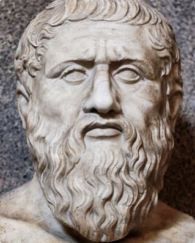
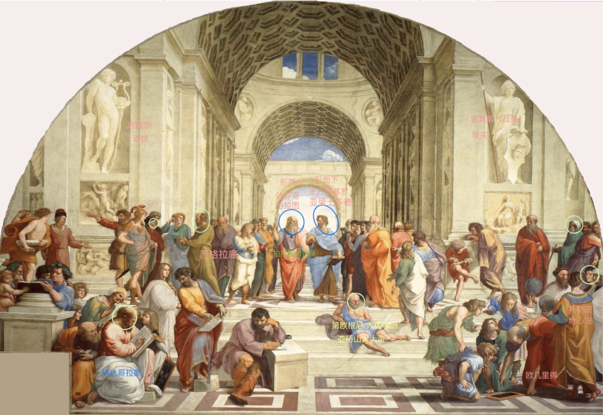

著名的古希腊哲学家，雅典人，他的著作大多以对话录形式纪录，并创办了著名的柏拉图学院。柏拉图是苏格拉底的学生，也是亚里士多德的老师，他们三人被广泛认为是西方哲学的奠基者，史称“西方三圣贤”或“希腊三哲”。另由其创造或发展的概念包括：柏拉图思想、柏拉图主义、柏拉图式爱情等。
柏拉图才思敏捷，研究广泛，著述颇丰。以他的名义流传下来的著作有40多篇，另有13封书信。经过 后世学者艰苦细致的考证，其中有24篇和4封书信 被确定为真品，主要有：《申辩》《普罗泰戈拉》《 曼诺》《斐多》《会饮》《国家》《斐德罗》《泰 阿泰德》《巴门尼德》《智者》《政治家》《蒂迈欧》《斐利布》《法律》（未完成）等篇。柏拉图 的著作大多是用対活体裁写成的，人物性格鮮明， 场景生动有趣，语言优美华丽，论证严密细致，内容丰富深刻，达到了哲学与文学、逻辑与修辞的高度统一，在文学上亦具有极其重要的意义和价值。
(?427-347BC) an ancient Greek philosopher, who had a very great influence on European philosophy. He explained his ideas in the form of written conversations. His teacher was Socrates, and after Socrates' death he established a school called the Academy, where Aristotle was one of his students. His most famous work is The Republic, about the perfect state and form of government.
